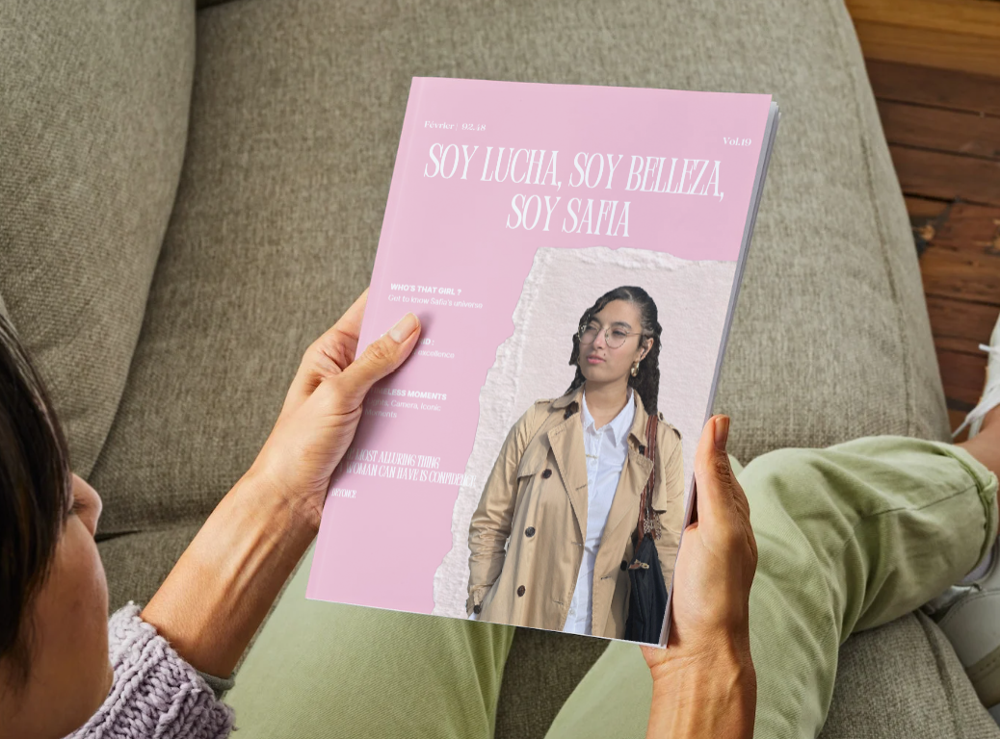
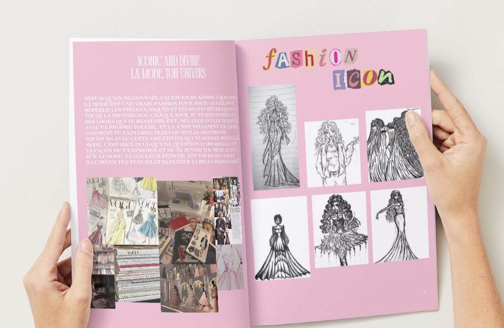

Magazine pop culture
J'ai réalise ce projet afin d'offrir une réalisation créer de A à Z par moi-même à une amie.
J'ai tout d'abord réalisé un moodboard et réfléchi à quel type de magazine je voulais réalisé avant de me lancer. J'ai donc rassembler toute les images que je voulais, je l'ai ai modifié sur Photoshop avant de créer le magazine sur Canva.
J'ai donc passer des semaines à créer, assembler et écrire le magazine tout en restant dans le style que j'ai créer. J'ai ajouter des références pop culture que l'on peut lire tout au long de la lecture du magazine J'ai pu développer mes compétences sur Photoshop et sur Canva car j'ai appris à modifier des photos, et j'ai pu utiliser Canva à son maximum en réalisant un magazine que j'ai pu ensuite imprimer.


